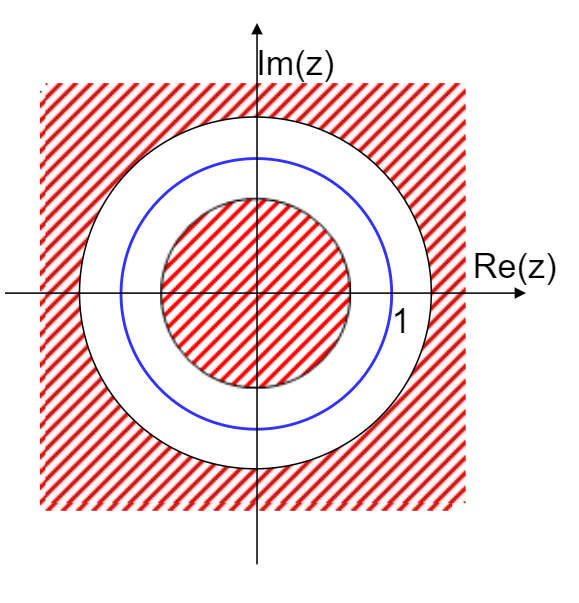
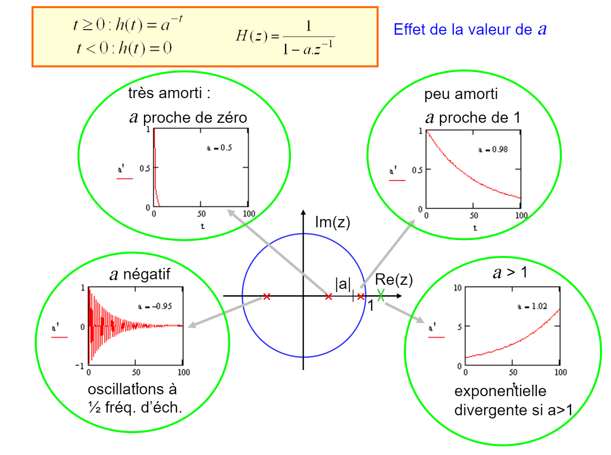
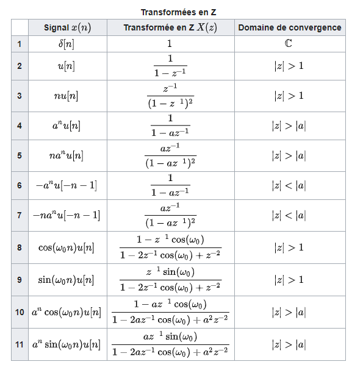

Filtre¶
Un filtre est un système électronique qui nous permet de sélectionner une ou plusieurs parties d’un signal ou de rejeter la partie qui ne nous intéresse pas, tels que les bruits parasites.
Introduction¶
On parle de filtrage de signal lorsqu’on atténue (la suppression est difficile) ou favorise dans un signal des fréquences par rapport à d’autres. Tous les supports de transmission (c’est-à-dire tous les câbles) se comportent comme des filtres. Le filtrage dépend de leur bande de fréquence.
En général, on recense 4 types de filtres :
Le filtre passe-haut qui laisse passer les fréquences hautes
Le filtre passe-bas qui laisse passer les fréquences basses
Le filtre passe-bande qui laisse passer une bande de fréquence
Le filtre coupe-bande qui supprime une bande de fréquence

De nombreux systèmes physiques peuvent être schématisés du point de vue de la théorie du signal par le lien entre le signal d’entrée \(e\) et le signal de sortie \(s\).

Cette correspondance entre l’entrée et la sortie est notée \(s = H(e)\).
\(H\) est une convolution. On a donc :
Définitions¶
Amplification¶
L’amplification d’un signal consiste à augmenter une ou certaine de ses grandeurs électriques :
le courant : amplification de courant
la tension : amplification de tension
la puissance : amplification de puissance
L’amplification de puissance étant à la fois une amplification de courant et de tension.
Une opération d’amplification est donc une opération de multiplication par une constante supérieure à 1.
Saturation¶
Les structures de traitement des signaux analogiques sont réalisées avec des amplificateurs. Ces derniers ne peuvent restituer, au maximum que la tension maximum qui les alimente. Si théoriquement ils doivent restituer plus, la tension de sortie ne dépassera pas cette tension d’alimentation. On dit qu’ils saturent.
Octave¶
Une octave est un rapport de deux entre deux fréquences. Par exemple un LA2 de fréquence 440Hz est une octave en dessous d’un LA3 de 880Hz. Pour changer de son à l’octave, on double par exemple la longueur d’une flûte.
Décade¶
Une décade est un rapport de 10 entre deux fréquences. Généralement, pour des grandeurs évoluant par décade, on utilise une échelle logarithmique (logarithme décimal) de sorte que les phénomènes soient plus visibles.
Gain¶
Plutôt que de parler de coefficient d’amplification, on préfère parler de gain. Le gain désigne la capacité d’une structure à augmenter ou diminuer la puissance ou l’amplitude d’un signal. Si le gain est positif, la structure amplifie le signal, si le gain est négatif, la structure atténue le signal.
L’unité du gain est le décibel noté \(dB\).
Fréquence de coupure¶
La fréquence de coupure spécifie une fréquence particulière à laquelle le **signal est atténué de \(-3dB\) ** (ou subit une atténuation de \(\frac{1}{\sqrt{2}}\) par rapport à l’amplitude maximale. Selon la position de cette fréquence par rapport à la courbe de fréquence on parle de fréquence de coupure basse ou de fréquence de coupure haute.
Bande passante¶
C’est la différence entre la fréquence de coupure haute et la fréquence de coupure basse. Les deux fréquences sont prises pour une atténuation par rapport au maximum de \(\frac{1}{\sqrt{2}}\).
Filtre passe-haut¶
Un filtre passe-haut ne laisse passer que les fréquences hautes qui sont supérieurs à sa fréquence de coupure \(f_c\). Il atténue les fréquences basses.
Filtre passe-bas¶
Un filtre passe-bas ne laisse passer que les fréquences inférieur à sa fréquence de coupure \(f_c\). Au-delà de \(f_c\), les fréquences sont atténuées.
Exemple du filtre passe-bas :
\(TF^-1(\hat{s} * \Pi_{[-Bc,Bc]^2})\) est le signal filtré passe-bas.
Remarque : Quel est le coût de la convolution discrète ? \(\to\) à priori, \(N^2\)
En fait, pour calculer la convolution, on peut utiliser la FFT.
On fait passer une convolution sur le signal pour sélectionner un contenu fréquentiel.
Filtre passe-bande¶
Un filtre passe-bande est un filtre ne laissant passer qu’une bande ou intervalle de fréquences compris entre une fréquence de coupure basse et une fréquence de coupure haute du filtre. Il cumule le fonctionnement du filtre passe-bas et du filtre passe-haut.
Filtre coupe-bande¶
Un filtre coupe-bande aussi appelé filtre réjecteur de bande est un filtre empêchant le passage d’un intervalle de fréquences. Il est composé d’un filtre passe-haut et d’un filtre passe-bas dont les fréquences de coupure sont souvent proches mais différentes, la fréquence de coupure du filtre passe-bas est systématiquement inférieure à la fréquence de coupure du filtre passe-haut.
Filtre analogique¶
Réponse impulsionnelle¶
Avant de définir \(f\), on défini la sortie du filtre lorsque l’entrée est l’impulsion unité. Si le signal entrant est une impulsion de Dirac \(δ(t)\), sa réponse impulsionnelle, parfois dite percusionnelle, est \(h(t)\). $\( h(t) = S[\delta(t)] \)$
On a en sortie :
La sortie y d’un filtre est \(y = h \ast x\) où h est la R.I.
Propriétés :
Linéarité : \(S(x_1 + x_2) = S(x_1) + S(x_2)\)
Invariance dans le temps : la translation du temps appliquée à l’entrée se retrouve à la sortie
Causalité¶
Un filtre est dit causal si et seulement si à une entrée \(e\) nulle pour \(t < 0\) correspond une sortie \(s = H(e)\) nulle pour \(t < 0\). Autrement dit, le filtre est causal si :
C’est-à-dire qu’il ne doit pas y avoir de réponse en absence d’action. Un filtre est causal si sa réponse à l’instant t ne dépend que des valeurs du signal d’entrée pour des instants antérieurs à t (l’effet ne peut ainsi précéder la cause).
Les systèmes causaux ont une réponse impulsionnelle nulle.
Stabilité¶
Un filtre est stable au sens EBSB (entrée bornée sortie bornée) si et seulement si à toute entrée \(x(t)\) bornée \(M\) correspond une sortie \(y(t)\) bornée \(M′\).
Si \(\forall n \ |x[n]| \leq M\) alors \(\forall \ n \ y[n]\) existe et \(|y[n]| \leq M'\)
La condition nécessaire et suffisante pour qu’un filtre linéaire soit stable est que :
Un filtre est stable au sens EBSB si et seulement si sa R.I \(h[n]\) est sommable.
Première conséquence :
Un filtre causal et stable est réalisable.
Gain et phase¶
On appelle gain complexe du filtre la TF de la réponse impulsionnelle \(h\). L’étude d’un filtre se fait en considérant sa réponse fréquentielle, constituée du gain \(G(f)\) et du déphasage \(\phi(f)\).
\(G_0\) est le gain dans la bande passante.
On définit la phase \(\phi\), en degré ou en radian, comme la différence de phase entre le signal de sortie et le signal d’entrée : \(\phi = \phi_s − \phi_e\)
Le déphasage entre le signal de sortie et celui d’entrée dépend du type de filtre et il varie avec la fréquence.
Fonction de transfert¶
Un autre moyen de caractériser un filtre est de fournir sa fonction de transfert \(H(z)\), qui peut être obtenue en divisant le spectre fréquentiel du signal de sortie avec celui du signal de l’entrée du filtre. Tout filtre linéaire est entièrement décrit par sa réponse fréquentielle en amplitude \(|H(z)|\) (le gain) et sa réponse de phase \(arg \ H(z)\) liée à sa réponse impulsionnelle.
On passe de la R.I \(h[n]\) à la fonction de transfert \(H(z)\)
La fonction de transfert du filtre correspond à la transformée en z de la réponse impulsionnelle. On peut donc retrouver \(h_n\) en effectuant la transformée en z inverse de \(H(z)\). Une autre façon d’obtenir \(h_n\) est de calculer directement à partir de l’équation de récurrence du filtre.
Relation entrée-sortie¶
On se donne un filtre de R.I \((h[n])_n \in \mathbb{Z}\). On note \(h[n] \leftrightarrow H(z)\)
Si le signal d’entrée \((x[n])\) admet \(X(z)\) comme TFTD, alors le signal de sortie \(y[n]\) admet une TFTD et
Filtre numérique¶
Un filtre numérique est une application \(F : L^2 (\mathbb{Z}) \to L^2 (\mathbb{Z})\). On parle de filtre linéaire si \(F\) est linéaire. La sortie à l’instant \(n\) d’un filtre numérique dépend de la sortie aux instants précédents \((m \leq n − 1)\) et de l’entrée à tout instant (\(m \leq n\) : filtre causal). Nous nous limiterons aux filtres linéaires invariants, ce qui impose que le signal filtré \(y(n)\) s’écrive alors comme une combinaison linéaire des échantillons passés de \(x(n)\) et \(y(n-1)\) dont les coefficients \(a_k\) et \(b_k\) fixeront le type de filtre.
Translation en temps :
Théorème : Si \(F\), un filtre linéaire vérifie \(T_{\tau}F = FT_{\tau}((a_n))\) alors F est une convolution.
Exemples :
\((a_n)_{n \in \mathbb{Z}} \to (\frac{a_n+a_{n+1}}{2})_{n \to \mathbb{Z}}\) \(\to\) linéaire et commute avec translation
\((a_n) \to (na_n)_{n \in \mathbb{Z}} \to\) linéaire
\((a_n)_{n \in \mathbb{Z}} \to (an^2 + 1)_{n \in \mathbb{Z}} \to\) non linéaire
Transformée en Z¶
Dans le cas de signaux discrets comme les signaux numériques, les transformées de Fourier sont très limitées en particulier pour les signaux possédant une infinité d’échantillons. Pour palier à ce problème, on introduit la transformée en Z, qui est une transformée de signaux discrets. La variable complexe z utilisée est alors discrète. La transformée en z est l’équivalent dans le domaine discret de la transformée de Laplace dans le domaine continu.
Soit \(x(n)\) un signal discret quelconque. Sa transformée en Z s’écrit :
Remarque :
On retrouve la définition de la transformée de Fourier en posant \(z = e^{\frac{i2\pi f}{f_e}}\) avec \(f_e\) la fréquence d’échantillonnage.
Zéro : on définit les zéros de la fonction \(X_z\) tels que \(X_z(z) = 0\)
Pôles : on définit les pôles de la fonction \(X_z\) tels que \(|X_z(z)| \to +\infty\)
Propriétés
Soit un filtre de R.I \((h[n])_n \in \mathbb{Z}\) on appellera fonction de transfert sa TZ : \(H(z) = \sum_n^{} h[n]z^{-n}\)
Si \(H(z) = z^{-l}\) alors \(h[n] = 0 \ \forall \ n\) sauf \(h[l] = 1\)
\(h[n] = \delta[n-l]\) alors on a en sortie \(y[n] = h[l]x[n-l] = x[n-l]\) le système est retardataire
Convolution
Si \(x[n]\) admet \(X[z]\) comme TZ et si \(y[n]\) admet \(Y[z]\) comme TZ
Alors : $\((x \ast y)[n] \to X(z)Y(z)\)$
TZ, série entières et domaines de convergence¶
Soit \(h_1[k] = a^k \Phi[k]\) et \(h_2[k] = -a^k \Phi[-k-1]\) On calcule \(H_1(z)\), \(H_2(z)\)
une série géométrique
Cela converge si \(|az^{-1} < 1|\), \(|a||z|^{-1} < 1\), \(|z|>|a|\).
on obtient une fraction rationnelle.
Le domaine de convergence est le sous-ensemble de \(\mathbb{C}\) dans lequel la série converge. Autrement dit, le domaine de convergence de la transformée en z de la suite \((x_n)_{n \in Z}\) est l’ensemble :
On l’appelle également couronne de convergence. Ci-dessous, en rouge, la zone de convergence.


Pour une séquence finie \(x[n]\), la transformée \(X(z)\) est un polynôme en \(z\) ou en \(z^{−1}\) et converge pour toutes les valeurs de \(z\), sauf pour 2 cas :
\(z = 0\) si \(X(z)\) contient des termes de la forme \(z^{-k}\)
\(z = \infty\) si \(X(z)\) contient des termes de la forme \(z\)
\(X(z)\) existe si \(x(n)\) a une croissance au plus exponentielle, auquel cas le domaine de convergence est compris dans une couronne :
de petit rayon le majorant de la base du côté des \(n\) négatifs
de grand rayon le majorant de la base du côté des \(n\) positifs
si la suite \(x(n)\) est de durée finie (ce qui est vrai dans la plupart des cas), le domaine de convergence est le plan tout entier.
En général, si \(X(z)\) est une fonction rationnelle de \(z\), la région de convergence dépend de la forme de \(x[n]\).
Signal droitier : \(x[n]\) est droitier si le plus grand pôle est plus grand que zéro et que la région de convergence s’étend à l’infini
Signal gaucher : \(x[n]\) est gaucher si le plus petit pôle est plus grand que zéro et que la région de convergence s’étend vers zéro
Signal bilatéral : \(x[n]\) est bilatéral si le domaine de convergence est un anneau.

Quand on donne une TZ, il faut donc toujours donner son domaine de convergence associé (puisque c’est une série de puissance infinie).
Ci-dessous la liste des TZ usuelles:

TZ, série entières et domaines de convergence¶
\(V(z) = \frac{N(z)}{D(z)}\) avec \(N\) et \(D\) des polynômes en \(Z\).
Définition :
Les racines de \(N\) appelées les zéros de la fraction
Les racines de \(D\) appelées les pôles de la fraction
Question :
Déterminer \((v[n])_{n \in \mathbb{Z}}\) dont \(V(z)\) est la TZ.
Il y a 3 domaines de convergence possible
couronne infinie
couronne
convergence
On choisi \(D_1\) comme domaine or on sait qu’à priori le signal \((v[n])_{n \in \mathbb{Z}}\) est causal et même que \(\sum^{}_{}|v[n]| =\infty\)
Il faut retrouver l’original \((x[n])_{n \in \mathbb{Z}}\) c’est-à-dire, trouver \(x[n]\) tel que \(X(z) = \sum^{}_{}x[n]z^{-n}\)
Méthode décomposition en élément simple (D.E.S) : utilisée pour les fractions rationnelles.
\(F(z) = \frac{\text{polynôme en z}}{\text{polynôme en z}} = \frac{N(z)}{D(z)}\)
Les racines de \(N(z)\) sont celles de \(F(z)\)
Les racines de \(D(z)\) sont les pôles de \(F(z)\)
Un polynôme de degré \(K\) admet \(K\) racines
Par ailleurs, un filtre stable a ses pôles complexes \(z_1, z_2, …, z_k\) situés à l’intérieur du cercle unité dans le plan complexe.
Filtre récursif et non-récursif¶
On peut classer les filtres numériques en 2 catégories selon leur réponse impulsionnelle : réponse impulsionnelle finie (RIF) et réponse impulsionnelle infinie (RII).
RIF (FIR)¶
Les échantillons \({h_n}\) de la réponse impulsionnelle deviennent nuls à partir d’un certain rang \(k\). C’est un filtre non-récursif. Un système à réponse impulsionnelle finie est toujours stable.
Exemple :
R.I du filtre moyenneur défini par \(y_n = \frac{x_n + x_{n-1}}{2}\) pour \(x_n = \delta(n), y_n = h_n \rightarrow h_n = \left\{\frac{1}{2};\frac{1}{2};0;0;…\right\}\)
RII (IIR)¶
Filtre rationnels admettant un pôle au moins. Il n’existe pas de rang \(k\) à partir duquel la réponse impulsionnelle devienne nulle. Un filtre à RII ne signifie pas que la réponse impulsionnelle ne puisse pas s’annuler par endroits. C’est un filtre récursif.
Exemple :
\(y_n = x_n - 0,4 x_{n-1} + 0,6 y_{n-1} \rightarrow h_n = \frac{2}{3 \delta(n)} + \frac{1}{3}(0,6)^n\)
Un filtre récursif est stable seulement si tous ses pôles sont à intérieur du cercle unité.
Méthode de la fenêtre¶
La méthode de la fenêtre sert à calculer les coefficients de \(h[n]\).
Comme \(b_k=h[k]\), le calcul des coefficients revient à trouver la réponse impulsionnelle du filtre. On part de l’amplitude de la réponse en fréquence d’un filtre idéal et on prend sa transformée de Fourier inverse. $\( h[n] = \int^{\frac{1}{2}}_{-\frac{1}{2}}H(t)e^{2i\pi \omega t}dt \)$
**Exemple avec la fenêtre rectangulaire \(w(n)\) : **
En fréquence, on a donc : $\( H_N(t) = H(t)\ast W(t) \ \text{avec} \ W(t) = \frac{sin(N\pi t)}{sin(\pi t)} \)$
On a trouvé la réponse \(h_N(n)\), mais celle ci est centrée sur 0, donc elle n’est pas causale ! La solution est de la retarder de \(\frac{N}{2}\) échantillons.